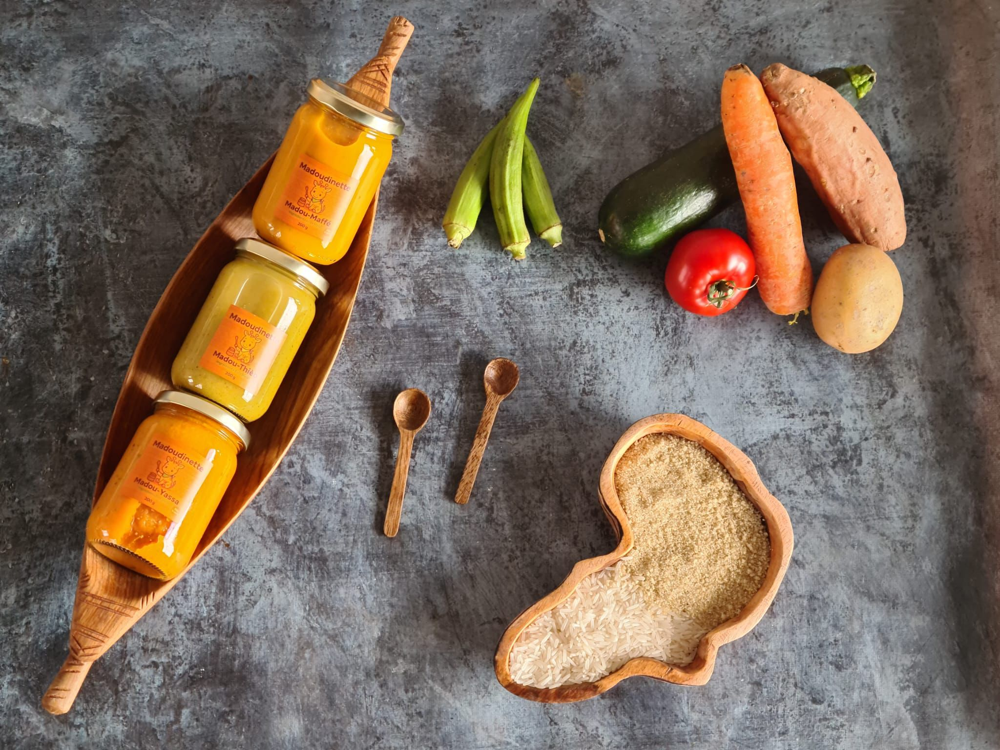
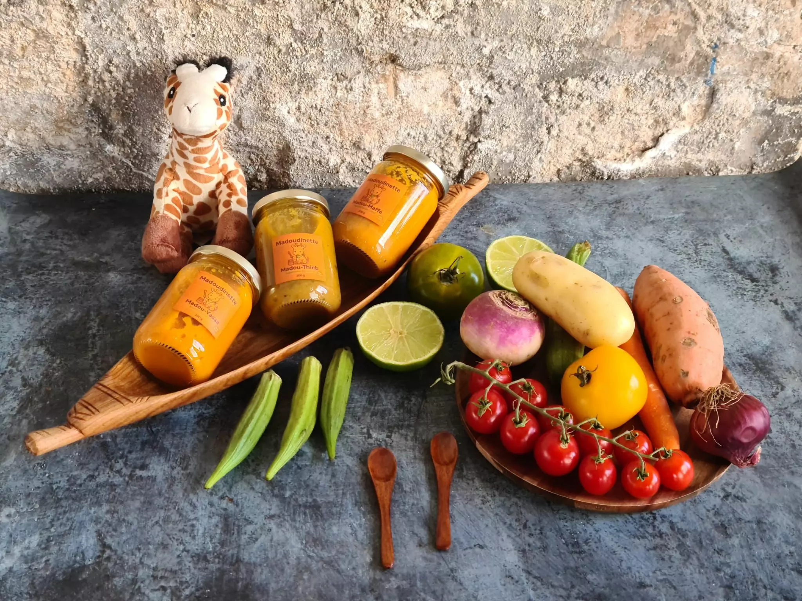
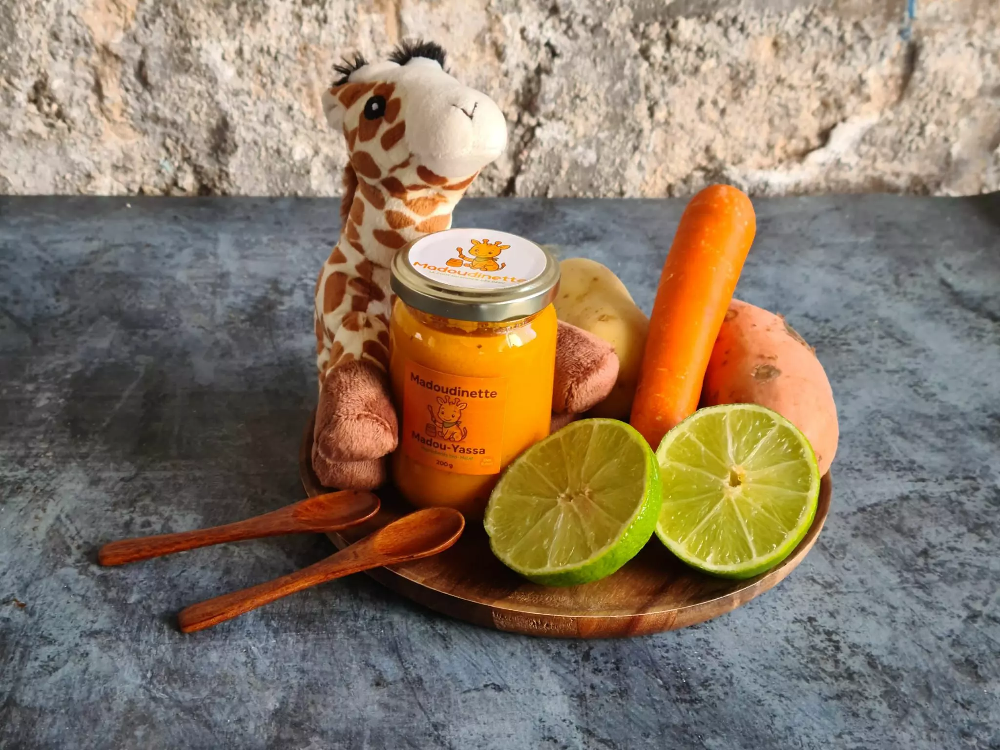
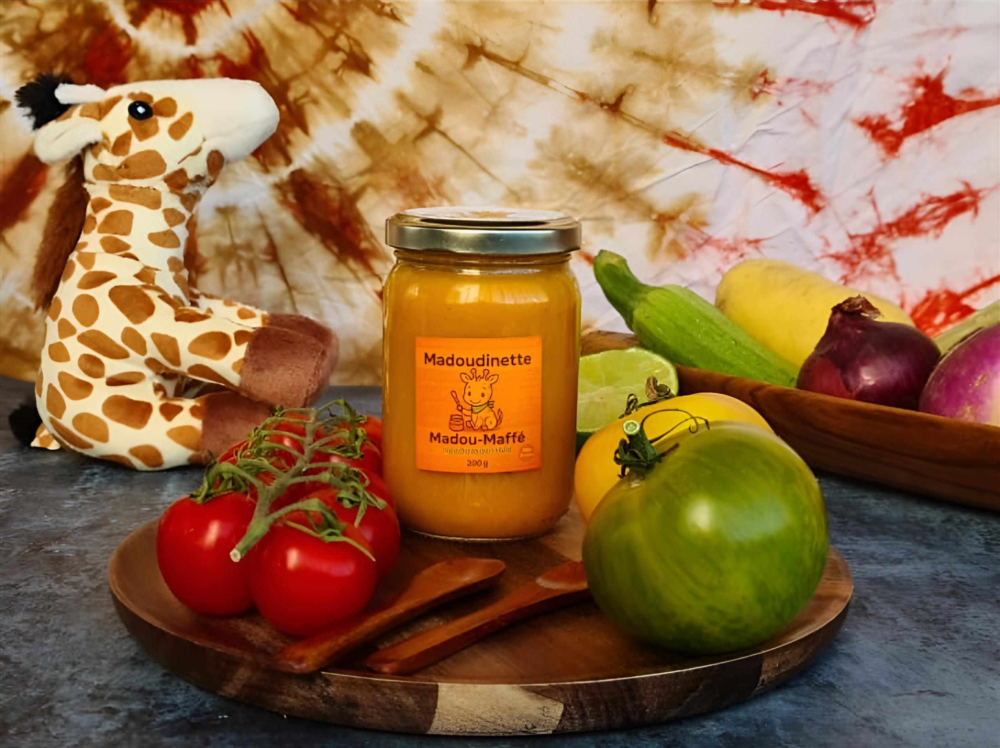

<!DOCTYPE html>
<html lang="fr">
  <head>
    <meta charset="UTF-8" />
    <meta name="viewport" content="width=device-width, initial-scale=1.0" />
    
    <link rel="preconnect" href="https://fonts.googleapis.com">
    <link rel="preconnect" href="https://fonts.gstatic.com" crossorigin>
    <link href="https://fonts.googleapis.com/css2?family=Montserrat:ital,wght@0,100..900;1,100..900&display=swap" rel="stylesheet">
    <link rel="stylesheet" href="style.css">
    <link rel="stylesheet" href="https://cdn.jsdelivr.net/npm/swiper@11/swiper-bundle.min.css" />
    <script src="https://cdn.tailwindcss.com"></script>
    <script src="./js/main.js"></script>
  </head>
</body>
</html>
    <script>
      tailwind.config = {
        theme: {
          extend: {
            colors: {
              "vert-olive": "#929f09",
              "orange-brul": "#e7820a",
              "jaune-dore": "#fab716",
              "marron-fonce": "#52300f",
              "fond-creme": "#ffd79d",
            },
            fontFamily: {
              display: ["AC Soft Icecream Display", "cursive"],
              sans: ["Montserrat", "Helvetica", "Arial", "sans-serif"],
            },
          },
        },
      };
    </script>
    <link rel="stylesheet" href="./css/style.css" />
    <link rel="icon" type="image/x-icon" href="./images/madoudinette logo.png" />
    <title>Accueil - Madoudinette</title>
  </head>
  <body class="flex flex-col min-h-screen bg-fond-creme">
    <script src="https://cdn.jsdelivr.net/npm/swiper@11/swiper-bundle.min.js"></script>
    <nav class="bg-vert-olive p-4 shadow-md relative z-50">
      <div class="container mx-auto flex items-center justify-between">

        <div class="flex items-center space-x-3 md:space-x-5">
          
          <h1 class="font-display text-xl md:text-4xl text-marron-fonce drop-shadow-sm transition-all duration-300">
            Madoudinette
          </h1>
        </div>

        <button id="mobile-menu-button" class="md:hidden text-white focus:outline-none p-2">
          <svg class="w-8 h-8" fill="none" stroke="currentColor" viewBox="0 0 24 24" xmlns="http://www.w3.org/2000/svg">
            <path stroke-linecap="round" stroke-linejoin="round" stroke-width="2" d="M4 6h16M4 12h16M4 18h16"></path>
          </svg>
        </button>

        <div class="hidden md:flex">
          <ul class="flex space-x-10 mr-10 text-white font-bold text-lg">
            <li class="transition duration-300 hover:-translate-y-1 hover:scale-110">
              <a href="./index.html" class="text-marron-fonce">Accueil</a>
            </li>
            <li class="transition duration-300 hover:-translate-y-1 hover:scale-110">
              <a href="./catalogue.html" class="hover:text-jaune-dore transition-colors">Catalogue</a>
            </li>
            <li class="transition duration-300 hover:-translate-y-1 hover:scale-110">
              <a href="./culture.html" class="hover:text-jaune-dore transition-colors">Culture & Bienfaits</a>
            </li>
            <li class="transition duration-300 hover:-translate-y-1 hover:scale-110">
              <a href="./contact.html" class="hover:text-jaune-dore transition-colors">Contact</a>
            </li>
          </ul>
        </div>

      </div>

      <div id="mobile-menu" class="hidden md:hidden absolute top-full left-0 w-full bg-vert-olive shadow-lg border-t border-white/20">
        <ul class="flex flex-col items-center py-4 space-y-4 text-white font-bold text-base">
          <li class="w-full text-center hover:bg-white/10 py-2">
            <a href="./index.html" class="text-marron-fonce">Accueil</a>
          </li>
          <li class="w-full text-center hover:bg-white/10 py-2">
            <a href="./catalogue.html" class="hover:text-jaune-dore">Catalogue</a>
          </li>
          <li class="w-full text-center hover:bg-white/10 py-2">
            <a href="./culture.html" class="hover:text-jaune-dore">Culture & Bienfaits</a>
          </li>
          <li class="w-full text-center hover:bg-white/10 py-2">
            <a href="./contact.html" class="hover:text-jaune-dore">Contact</a>
          </li>
        </ul>
      </div>
    </nav>

    <div class="relative w-full h-[500px]">
      

      <div class="absolute inset-0 bg-black/40"></div>
      
      <div class="absolute inset-0 flex items-center justify-center px-4">
        <div class="text-center max-w-4xl">
          <h2 class="text-5xl md:text-6xl font-display font-bold text-jaune-dore drop-shadow-lg mb-4">
            Madoudinette
          </h2>
          <p class="font-sans font-bold text-xl md:text-2xl text-white drop-shadow-md leading-relaxed">
            Les 1ers petits pots pour bébés inspirés des saveurs africaines,
            halal et biologiques.
          </p>
          <a href="./catalogue.html" class="inline-block mt-8 bg-orange-brul text-white font-bold py-3 px-8 rounded-full shadow-lg hover:bg-jaune-dore transition duration-300">
            Découvrir nos produits
          </a>
        </div>
      </div>
    </div>

    <main class="container mx-auto px-4 py-12 bg-fond-creme">
      
      <div class="max-w-4xl mx-auto mb-16">
        <h3 class="text-marron-fonce text-5xl text-center mb-8 font-bold font-display pt-10 pb-10">
          Présentation
        </h3>
        <div class="aspect-video rounded-xl overflow-hidden shadow-xl">
          <iframe
            class="w-full h-full"
            src="https://www.youtube-nocookie.com/embed/0saajiYGCRw?start=3&rel=0&modestbranding=1"
            title="Vidéo Madoudinette"
            frameborder="0"
            allowfullscreen
            loading="lazy"
          ></iframe>
        </div>
        <div class="mt-8 text-center max-w-2xl mx-auto">
          <p class="text-lg text-gray-700 leading-relaxed font-medium pb-14 pt-10 ">
            Madoudinette : marque fondée par une maman de cinq enfants, proposant
            des petits pots <span class="text-vert-olive font-bold">bio</span>, <span class="text-vert-olive font-bold">halal</span> et inspirés des <span class="text-orange-brul font-bold">saveurs africaines</span>, pour
            répondre au manque de diversité dans l’alimentation infantile.
          </p>
        </div>
      </div>
    <section class="bg-fond-creme py-24">
  <h3 class="text-marron-fonce text-4xl text-center mb-12 font-bold font-display">
    Nos Produits
  </h3>

  <div class="max-w-6xl mx-auto grid md:grid-cols-3 gap-10 px-6">

    <!-- Carte 1 -->
    <div class="bg-white rounded-2xl shadow-xl border-4 border-fond-creme overflow-hidden flex flex-col">
      <div class="h-48 overflow-hidden bg-gray-100">
        
      </div>

      <div class="p-6 flex flex-col flex-grow">
        <span class="inline-flex items-center px-3 py-1 rounded-full text-xs font-bold bg-jaune-dore text-marron-fonce mb-3">
          👶 Dès  6 mois • En stock
        </span>

        <strong class="font-display text-2xl text-marron-fonce mb-2">
          Mafé Bœuf
        </strong>

        <p class="text-gray-600 text-sm leading-relaxed">
          Un grand classique d’Afrique de l’Ouest revisité pour les tout-petits. Ce plat allie goût, douceur et équilibre nutritionnel pour éveiller le palais de bébé en toute sécurité.
        </p>

        <button class="mt-auto pt-4 text-orange-brul font-bold text-sm hover:underline self-start">
          Voir les détails →
        </button>
      </div>
    </div>

    <!-- Carte 2 -->
    <div class="bg-white rounded-2xl shadow-xl border-4 border-fond-creme overflow-hidden flex flex-col">
      <div class="h-48 bg-fond-creme/50 flex items-center justify-center text-marron-fonce">
        
      </div>

      <div class="p-6 flex flex-col flex-grow">
        <span class="inline-flex items-center px-3 py-1 rounded-full text-xs font-bold bg-gray-200 text-marron-fonce mb-3 bg-jaune-dore">
        👶 Dès 6 mois • En stock
        </span>

        <strong class="font-display text-2xl text-marron-fonce mb-2">
          Yassa Poulet
        </strong>

        <p class="text-gray-600 text-sm leading-relaxed">
          Une recette saine et gourmande du célèbre Yassa sénégalais, adaptée aux bébés dès 6 mois, alliant tradition culinaire et apports essentiels pour grandir en douceur.
        </p>

        <button class="mt-auto pt-4 text-orange-brul font-bold text-sm hover:underline self-start">
          Voir les détails →
        </button>
      </div>
    </div>

    <!-- Carte 3 -->
    <div class="bg-white rounded-2xl shadow-xl border-4 border-fond-creme overflow-hidden flex flex-col">
      <div class="h-48 bg-fond-creme/50 flex items-center justify-center text-marron-fonce">
        
      </div>

      <div class="p-6 flex flex-col flex-grow">
        <span class="inline-flex items-center px-3 py-1 rounded-full text-xs font-bold bg-jaune-dore text-marron-fonce mb-3">
          👶 Dès 6 mois • En stock
        </span>

        <strong class="font-display text-2xl text-marron-fonce mb-2">
          Thieb poisson
        </strong>

        <p class="text-gray-600 text-sm leading-relaxed">
          Un plat inspiré du traditionnel Tcheboudienne Sénégalais, revisité pour bébé dès 6 mois. Savoureux et équilibré, il répond aux besoins nutritionnels des tout-petits.
        </p>

        <button class="mt-auto pt-4 text-orange-brul font-bold text-sm hover:underline self-start">
          Voir les détails →
        </button>
      </div>
    </div>

  </div>
</section>


<section class="bg-fond-creme py-24 overflow-hidden">
  <h3 class="text-marron-fonce text-4xl text-center mb-12 font-bold font-display">
    Nos Valeurs
  </h3>

  <div class="carousel-container">
    <div class="carousel__content">
      
      <article class="carousel__card bg-white rounded-2xl shadow-lg border-2 border-vert-olive/20 w-[300px] flex-shrink-0 p-8 flex flex-col items-center text-center mr-8">
        <div class="mb-6 h-20 flex items-center justify-center">
          
        </div>
        <h4 class="text-xl font-bold text-vert-olive mb-3 font-display">Ingrédients frais</h4>
        <p class="text-gray-700 font-medium text-sm leading-relaxed">
          Légumes bio, céréales africaines et viandes halal. Sans additifs, juste l'essentiel pour bien grandir.
        </p>
      </article>

      <article class="carousel__card bg-white rounded-2xl shadow-lg border-2 border-vert-olive/20 w-[300px] flex-shrink-0 p-8 flex flex-col items-center text-center mr-8">
        <div class="mb-6 h-20 flex items-center justify-center">
          
        </div>
        <h4 class="text-xl font-bold text-vert-olive mb-3 font-display">Palette riche</h4>
        <p class="text-gray-700 font-medium text-sm leading-relaxed">
          Des recettes aux saveurs du monde pour éveiller la curiosité et transmettre un patrimoine riche.
        </p>
      </article>

      <article class="carousel__card bg-white rounded-2xl shadow-lg border-2 border-vert-olive/20 w-[300px] flex-shrink-0 p-8 flex flex-col items-center text-center mr-8">
        <div class="mb-6 h-20 flex items-center justify-center">
          
        </div>
        <h4 class="text-xl font-bold text-vert-olive mb-3 font-display">Saine et sûre</h4>
        <p class="text-gray-700 font-medium text-sm leading-relaxed">
          Validées par des nutritionnistes, nos recettes 100% naturelles aux super-aliments sont sûres pour bébé.
        </p>
      </article>

      <article class="carousel__card bg-white rounded-2xl shadow-lg border-2 border-vert-olive/20 w-[300px] flex-shrink-0 p-8 flex flex-col items-center text-center mr-8">
        <div class="mb-6 h-20 flex items-center justify-center">
          
        </div>
        <h4 class="text-xl font-bold text-vert-olive mb-3 font-display">Durabilité</h4>
        <p class="text-gray-700 font-medium text-sm leading-relaxed">
          Ingrédients bio et équitables, soutien aux producteurs africains et emballages écoresponsables.
        </p>
      </article>

    </div>
  </div>
</section>
<section class="py-24 bg-neutral-50">
  <h3 class="text-marron-fonce text-4xl text-center mb-12 font-bold font-display">
    Ce que nos clients pensent de nous
  </h3>

  <div class="max-w-6xl mx-auto grid md:grid-cols-3 gap-10 px-6">

    <!-- Témoignage 1 -->
    <div class="bg-white rounded-2xl shadow-lg p-8 flex flex-col">
      <p class="text-gray-700 text-lg italic mb-6">
        “Je suis vraiment ravie d’avoir découvert Madidounette. Mon bébé adore leurs recettes, et moi je suis bluffée par la diversité des saveurs proposées. On est loin des goûts classiques qu’on retrouve partout !.”
      </p>
      <div class="mt-auto flex items-center gap-4">
        
        <div>
          <p class="font-bold text-marron-fonce">Aminata Diop</p>
          <p class="text-sm text-orange-brul font-medium">Maman d’une petite fille</p>
        </div>
      </div>
    </div>

    <!-- Témoignage 2 -->
    <div class="bg-white rounded-2xl shadow-lg p-8 flex flex-col">
      <p class="text-gray-700 text-lg italic mb-6">
        “Les repas sont équilibrés, savoureux, et surtout adaptés aux besoins des tout-petits. En tant que parent, c’est rassurant de savoir que tout est fait dans le respect des normes. Un vrai gain de sérénité.”
      </p>
      <div class="mt-auto flex items-center gap-4">
        
        <div>
          <p class="font-bold text-marron-fonce">Fatoumata Traouré</p>
          <p class="text-sm text-orange-brul font-medium">Maman de deux enfants</p>
        </div>
      </div>
    </div>

    <!-- Témoignage 3 -->
    <div class="bg-white rounded-2xl shadow-lg p-8 flex flex-col">
      <p class="text-gray-700 text-lg italic mb-6">
        “Un concept utile, fiable, et vraiment pratique pour les repas de bébé. On apprécie l’aspect sain, halal et la transparence sur la composition. Idéal pour les familles soucieuses de bien faire.”
      </p>
      <div class="mt-auto flex items-center gap-4">
        
        <div>
          <p class="font-bold text-marron-fonce">Bachir Itachir</p>
          <p class="text-sm text-orange-brul font-medium">Parent satisfait</p>
        </div>
      </div>
    </div>
  </div>
</section>
    </main>
  <footer class="bg-vert-olive text-fond-creme pt-14 pb-8 mt-20">
  <div class="container mx-auto px-6 grid md:grid-cols-3 gap-12">
    <div>
      <div class="flex items-center space-x-4 mb-4">
        
        <h2 class="font-display text-3xl font-bold text-marron-fonce">Madoudinette</h2>
      </div>
      <p class="text-white/90 leading-relaxed font-medium">
        Les premiers petits pots pour bébés inspirés des saveurs africaines, 
        biologiques et halal. Pour une alimentation saine, riche et pleine de culture.
      </p>
    </div>
    <div>
      <h3 class="text-xl font-bold text-marron-fonce mb-4">Liens utiles</h3>
      <ul class="space-y-2 text-white/90 font-medium">
        <li><a href="./index.html" class="hover:text-jaune-dore transition">Accueil</a></li>
        <li><a href="./catalogue.html" class="hover:text-jaune-dore transition">Catalogue</a></li>
        <li><a href="./culture.html" class="hover:text-jaune-dore transition">Culture & Bienfaits</a></li>
        <li><a href="./contact.html" class="hover:text-jaune-dore transition">Contact</a></li>
      </ul>
    </div>

    <div>
      <h3 class="text-xl font-bold text-marron-fonce mb-4">Contact</h3>
      <ul class="text-white/90 space-y-2 font-medium">
        <li>France</li>
        <li>contact@madoudinette.com </li>
        <li>06 17 51 66 01 </li>
      </ul>

      <div class="flex space-x-4 mt-4">
        <p class="font-bold text-marron-fonce ">Suivez nous </p><br>
        <a href="https://www.instagram.com/madoudinette/?hl=fr" class="hover:scale-110 transition">
          
        </a>
        <a href="https://www.facebook.com/people/Madoudinette-Madoudinette/" class="hover:scale-110 transition">
          
        </a>
        <a href="https://www.tiktok.com/@madoudinette" class="hover:scale-110 transition">
          
        </a>
      </div>
    </div>

  </div>

  <div class="border-t border-fond-white/50 mt-10 pt-5 text-center text-sm text-fond-white/80 text-white">
    © 2025 Madoudinette — Tous droits réservés.
  </div>
</footer>
  </body>
</html> 
